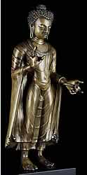
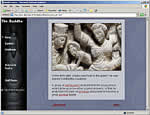
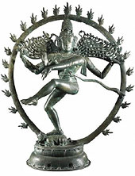

|
|
Learning from the Buddha The new Buddha jointly acquired by the British Museum and the V&A is the first standing figure of the Buddha, in metal and made in the Gupta style of the 7th century AD, to enter a public European museum collection.It will tour during the year to Birmingham, Bradford, Leicester and Exeter, as well as being displayed on rotation at the V&A and the British Museum. We hope the acquisition of this rare and beautiful piece will encourage more people to learn from it about the Buddha and the early centuries of Buddhist art. Here are some ideas to start you off.....  The Buddha's life: Visit the British Museum's Ancient India website to follow the life of the Buddha, illustrated through relief sculptures in the Museum's collection. Interpreting Buddhist iconography: For several centuries after the Buddha's death, Buddhism was an aniconic religion, in which Buddha himself was not represented as a man, but in which various symbols represented the Buddha and the events of his life. Try the challenge on the Ancient India website to see how many you can recognise. Compare Buddhist and Hindu iconography: For ideas on comparing how religious iconography is used in two different faiths, look in the Staff Room of the Ancient India website. You'll also find lots of background information on the growth and spread of Buddhism, and on Buddhist stupas and how they are used. Gupta period Buddhas:If you search the British Museum's COMPASS database, you'll find six other Gupta period Buddhas, in metal or stone. Compare the characteristic stylised hair and 'wet drapery' folds in the different materials, and find out about the techniques of Indian bronze-casting. For advanced learners...The British Museum runs a Diploma in Asian Art, which has a module in Classical and Decorative Arts of India. This intensive 12-week course will be running from September - December 2004. Click here for further information.
|
 Dancing Shiva in a ring of fire, Tamil Nadu, southern India, Chola dynasty, around AD1100 |
||
|
home |
visit |
what's on |
join |
shop |
learning |
COMPASS |
world cultures |
sitemap |
contact us |
copyright
© The British Museum, 2002 |
|||